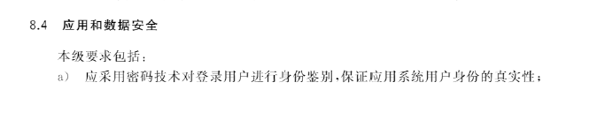
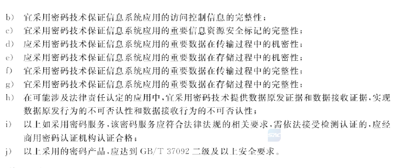
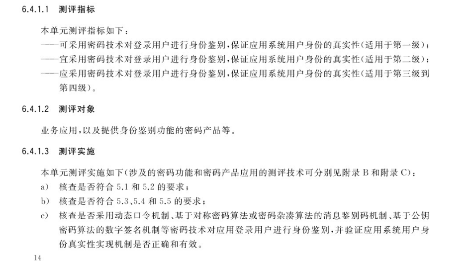

应用层现场取证和结果记录编写
应用层测评是密评活动中最重要的部分，密评要重点保护的数据就是应用中数据库的数据，保护的用户也是使用该系统的用户，密改主要针对的也是应用层，应用层在密评评分中占30分。所以本篇内容会较多，较详细。
测评指标
 -
真实性 ：真实性解释可参考物理层测评 ,PS:个人理解这里说的采用密码技术进行身份鉴别，指的是客户端和服务端都得使用密码技术。所以 GB /T 《43206 信息安全技术 信息系统密码应用测评要求 》里给出符合的身份鉴别方式为动态口令机制、基于对称密码算法或密码杂凑算法的消息鉴别码机制、基于公钥密码算法的数字签名机制，这三种机制在服务端和客户端都进行了密码运算。
 -
访问控制信息完整性：访问控制信息为用户权限（与用户绑定的角色）、角色权限（与角色相关读写、访问权限）、菜单权限（不同角色能看到的菜单）。
-
重要数据传输机密性：政务系统通常采用网络层弥补。
-
重要数据传输完整性：政务系统通常采用网络层弥补。
-
重要数据存储机密性：指数据库要进行机密性保护的数据需以密文形式保存。
-
重要数据存储完整性：指数据库要进行完整性保护的数据不能被非法篡改（比如攻击者入侵了数据库，修改数据后前端会有安全提示或产生告警），只能通过前端合法修改。
-
不可否认性：通常不适用。
测评对象划分
应用层的测评对象为业务应用及业务应用的重要数据，可参考该系统密码应用方案。不过系统的实际情况可能与密码应用方案存在出入，通常测评前需重新梳理，测评人员需访谈系统建设方，明确系统每个应用面向的用户，各用户的身份鉴别方式有哪些，每个应用的重要数据有哪些，给出所存在重要数据中的密码需求。


证据收集
单个层面围绕测评指标收集证据，测评对象的证据收集围绕D（密码使用有效性），A（密码算法/技术合规性），**K（密钥管理安全）**方面来进行。每个方面的证据需>=2条。
由于现场实际测评的情况很多种，本文只描述三级系统完全符合的情况下。截图证据使用文字描述。以下为收集的证据图片：
身份鉴别
应用层用户的身份鉴别方式通常有账户名+口令，账户名+短信验证码、动态口令、UKEY+PIN码等登录方式，本文仅介绍符合UKEY+PIN码、账户名+动态口令登录方式。
UKEY登录

图 4-1 UKEY+PIN码登录方式
图 4-2 用户无UKEY登录失败
图 4-3 无pin码用户登录失败
图 4-4 ukey证书
图 4-5 用户成功登录签名值
图 4-6 验签成功
图 4-7 服务端到签名验签服务器的数据包
图 4-8 ukey验签代码
图 9-1 ukey商用密码产品证书
图 9-2 ukey商用密码产品证书
D（密码使用有效性）所需证据:
- 访谈系统开发人员，了解ukey登录实现机制；（证明密码使用有效性）
- 前端UKEY+PIN码登录方式；（证明存在UKEY登录方式）
- 无UKEY“登录失败”提示；（证明需使用UKEY登录）
- 无pin码“登录失败”提示；（证明还需使用PIN码登录）
- 服务端到签名验签服务器的数据包；（证明UKEY登录使用了密码产品）
- ukey验签代码；（证明UKEY登录功能）
A（密码算法/技术合规性）所需证据:
- ukey证书为国密证书；（证明使用了SM2算法）
- ukey登录签名值验签成功；（证明使用了基于SM2算法的数字签名技术）
K（密钥管理安全）：
- 访谈密码厂商，了解密钥管理措施；（了解密钥管理机制）
- 商用密码产品证书；（证明密钥存储安全）
动态口令

D（密码使用有效性）所需证据:
- 访谈系统开发人员，了解动态口令登录实现机制；（证明密码使用有效性）
- 动态口令登录方式；（证明存在动态口令登录方式）
- 前端调用动态口令接口；（证明动态口令有效）
- 手机app中动态口令；（证明动态口令有效）
- 前端登录数据包中动态口令；（证明动态口令有效）
- 动态口令实现代码；（证明动态口令有效）
- 访谈密码厂商，了解动态口令生成算法；（证明使用了密码技术）
A（密码算法/技术合规性）所需证据:
- 访谈密码厂商，了解动态口令生成算法；（证明使用了国密算法）
- 查看动态令牌认证系统的算法配置；（证明使用了国密算法）
- 商用密码产品证书；（证明使用密码产品通过商密认证）
K（密钥管理安全）：
- 访谈密码厂商，了解密钥管理措施；（了解密钥管理机制）
- 商用密码产品证书；（证明密钥存储安全）
传输机密性
传输完整性
存储机密性
存储完整性
不可否认性
结果记录
身份鉴别
UKEY登录

1）经核查及访谈，XXX系统为超级管理员提供了UKEY+PIN码登录方式。通过无ukey登录和错误pin码测试，证实XXX系统需要插入ukey和正确输入pin码才能登录。如图4-1，图4-2，图4-3所示。
2）经核查，XXX系统超级管理员用户登录ukey使用证书为SM2证书。通过在超级管理员使用ukey登录时抓包，将传输过程中抓取的签名值进行验证，确认为SM2算法，算法使用合规。如图4-4，图4-5，图4-6所示。
3）经核查，通过登录时在XXX系统服务端抓包，发现存在XXX系统与签名验签服务器的交互流量。流量包中证书与ukey所用证书一致，且存在ukey验签代码。如图4-4，图4-7，图4-8所示。
4）经访谈及核查，ukey登录方式由智能密码钥匙和签名验签服务器实现。XXX系统超级管理员插入ukey后和输入正确PIN码进行登录，系统调用本地的智能密码钥匙驱动去识别智能密码钥匙的内嵌证书。系统后台生成随机数传递给前端，ukey对随机数进行签名，得出签名值后，签名完成后将签名值发送给系统服务器，系统服务器调用签名验签服务器对签名值进行验签，验签成功即可登录成功。
5）经核查，系统登录所用ukey具备符合密码模块安全技术要求第二级要求的商用密码产品认证证书，ukey符合GM/T 0027《智能密码钥匙技术规范》，签名验签服务器符合GM/T 0029《签名验签服务器技术规范》，实际部署的产品与证书一致。如图9-1、图9-2所示。
6）经访谈及核查，ukey中的数字证书由密码设备厂商签发，且私钥不可被导出。
动态口令

1）经访谈及核查，XXX系统为超级管理员提供了用户名+动态口令的登录方式，用户在登录XXX系统时，输入动态口令，系统调用了动态口令接口。如图4-9，图4-10，图4-11，图4-12所示。
2）经核查，通过登录时在XXX系统服务端抓包，发现存在XXX系统服务端与动态令牌认证系统的交互流量。流量包中登录时的动态口令，存在调用动态口令接口的代码。如图4-13，图4-14所示。
3）经访谈及核查，XXX系统超级管理员动态口令机制为：用户需要手动扫描二维码进行令牌绑定，绑定时动态令牌会与用户自身唯一令牌号进行绑定，在登录时进行身份认证。
4）系统登录所用动态令牌认证系统具备符合密码模块安全技术要求第二级要求的商用密码产品认证证书，动态令牌认证系统符合GM/T 0021《动态口令密码应用技术规范》，实际部署的产品与证书一致。如图9-3、图9-4所示。
传输机密性
传输完整性
存储机密性
存储完整性
不可否认性
参考
转载请注明来源，欢迎对文章中的引用来源进行考证，欢迎指出任何有错误或不够清晰的表达。可以在下面评论区评论，也可以邮件至 mengzhengan@foxmail.com